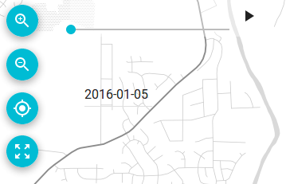

The timeline control allow to select the current date, which is used to select which features are rendered from those that are contained in layers with time information.
By dragging the time slider, a different date is selected. Only features that are defined to be rendered at that date will appear in the map.
Click the play button to make the timeline slider advance automatically. Click the pause button (when the autoplay option is active) to stop the timeline slider